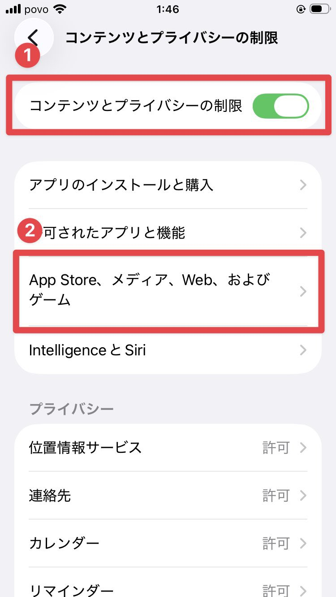
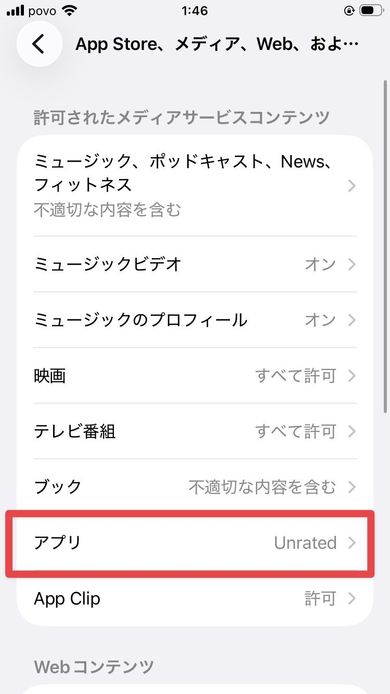
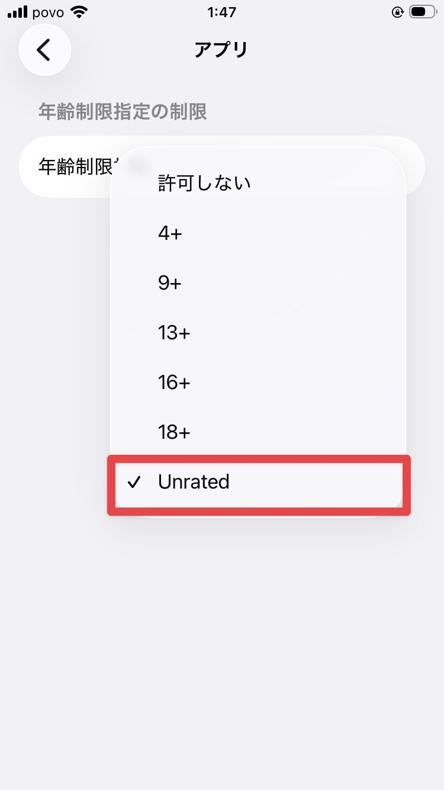

Step 3 of 4
スクリーンタイムの設定
iMons（審査適応区分外アプリ）をインストールできるように、制限を一時的に緩和します。



1
制限をオンにする
設定アプリ ＞ スクリーンタイム ＞ コンテンツとプライバシーの制限 に進み、一番上のトグルをオンにします。
2
ストア制限の設定を開く
「App Store、メディア、Web、およびゲーム」をタップします。
3
アプリの制限を「Unrated」に
「アプリ」の項目を選択し、一番下の「Unrated」にチェックを入れます。